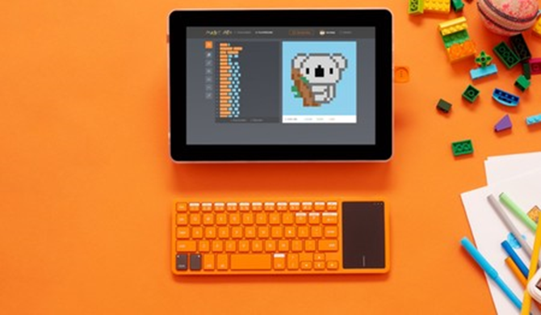
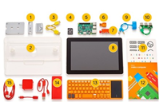

Los niños (y mayores) ya se pueden construir un funcional portátil gracias al nuevo kit de Kano

La empresa Kano lleva años sorprendiéndonos con kits que han permitido contar con pequeños miniordenadores
basados en las Raspberry Pi, y ahora vuelven a apoyar estos proyectos con una nueva alternativa: un kit para
construir un portátil.
El llamado Computer Kit Complete es una evolución de esos kits de teclado-ordenador y pantalla que ya
habíamos visto y lo transforma en un verdadero portátil que cualquiera se puede construir con la ventaja de
aprender cuáles son los componentes principales de este tipo de máquinas. Y cuando decimos cualquiera, es que
es cualquiera.
Un portátil que te educa desde el primer instante

Los responsables del producto de hecho señalan cómo se ensambla el kit
gracias a unas instrucciones en forma de pequeño cómic que se incluye en el
paquete. Es allí donde se explica cómo se colocan y funcionan componentes
como la batería, los sensores, los altavoces o la placa principal. El equipo está
basado en una Raspberry Pi 3, a la que se suma la pantalla de 10,1 pulgadas, un
sensor de sonido, batería recargable, la carcasa o el teclado con touchpad que
permiten montar este singular equipo. A partir de ese momento, claro, toca
disfrutar de un modesto pero funcional portátil con el que poder aprender a programar en lenguajes como
JavaScript o Python a partir de herramientas visuales que van de menos a más.
El sistema operativo que gobierna esta
plataforma es Kano OS, que en realidad es
una versión de la distribución Debian
adaptada a este producto, y que tiene
como protagonista principal Kano Blocks,
ese lenguaje de programación visual que
permite obtener el código de salida en
lenguajes como los citados Python o
JavaScript entre otros. El nuevo kit se
convierte por tanto en el refuerzo de una
apuesta que llega a tiempo: la época
navideña está a la vuelta de la esquina y
este puede ser un excelente regalo para
pequeños y mayores. Si estáis interesados, el kit ya está disponible a 329,99 euros.